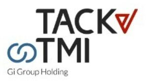

Trade Mark Journal No.2026/003 16 January 2026
WO0000001881275 (35,41)
Office of origin: Italy
Date of International Registration:21 May 2025
Date of designation in the UK:
21 May 2025

The mark consists of a sign depicting the wording TACK TMI in fancy characters and placed on two levels. To the right of the term TACK and to the left of the term TMI, there are two geometric shapes, respectively in red and blue. The wording Gi Group Holding is placed below the wording TMI.
The mark contains the colours black, blue and red.
International priority date claimed: 2 April 2025
(Italy)
(302025000055512)
- Class 35
- Acquisition (business -) searches; procurement of contracts [for others]; acquisition of business information relating to company activities; acquisition of commercial information; purchasing agency services; outdoor advertising; business acquisitions consultation; rental of advertising space on the Internet for employment advertising; administration relating to marketing; work analysis to determine worker skill sets and other worker requirements; analysis of market research data; online advertising; preparation of advertisements; temporary personnel services; support for employees with regard to business matters; assistance to industrial or commercial enterprises in the running of their business; assistance to management in commercial enterprises in respect of public relations; management assistance; providing assistance in the field of business organisation; personnel management assistance; systemization of information into computer databases; rental of billboards [advertising boards]; employment agency services; placement of staff; employment outplacement services; placing advertisements for others; compilation of advertisements for use as web pages on the Internet; compilation of information into computer databases; data compilation for others; compilation of lists of prospective customers; compilation of business directories; collecting information for business; compilation of statistical information; conducting of business appraisals; confirming scheduled appointments for others; business consulting; management advice; business recruitment consultancy; consultancy relating to the selection of personnel; human resources consultancy; career placement consulting services; personnel placement consultancy; interviewing services [for personnel recruitment]; provision of information relating to recruitment; providing information relating to employment recruitment; providing market research statistics; providing user rankings for commercial or advertising purposes; providing and rental of advertising space on the internet; office functions; data processing; personnel management; customer relationship management; human resources management; operation of businesses [for others]; business management; interviewing for market research purposes; office functions in the nature of filing documents; negotiation of business contracts for others; rental of advertising space on-line; arranging of business introductions; preparation of résumés for others; document preparation; testing to determine professional competency; testing to determine job competency; personnel recruitment advertising; collection of data; collection of information relating to market research; collection of personnel information; headhunting services; business data research; personnel recruitment; recruitment of executive staff; permanent staff recruitment; personnel selection [for others]; personnel placement and recruitment; administrative services relating to the relocation of personnel; business analysis services; internship placement services; business records keeping; consultancy and advisory services relating to personnel management; consultancy and advisory services relating to personnel recruitment; consultancy and advisory services relating to personnel placement; business consultancy and advisory services; career advisory services (other than education and training advice); personnel management consultancy; human resources management and recruitment services; job matching services; appointment scheduling services [office functions]; appointment reminder services [office functions]; market research data retrieval services; business research and advisory services; employee relocation services; personnel placement; professional recruitment services; personnel services; opinion polling; market canvassing; business supervision; supervision of businesses on behalf of others; psychological testing for the selection of personnel; data transcription; transcription of communications [office functions]; personnel relocation; evaluation of personnel requirements; testing to determine employment skills; rental of advertising time on communication media; updating of advertising material; business administration; administration of employee welfare benefit plans; analysis of advertising response and market research; marketing and promotional services; market research; providing marketing consulting in the field of social media; digital marketing; arranging and conducting of promotional and marketing events; analysis of business management systems; economic analysis and forecasting; statistical analysis and reporting; assistance, advisory services and consultancy with regard to business analysis; management and operation assistance to commercial businesses; compilation of business directories for publishing on the Internet; compilation of information into computerised registers; updating and maintenance of data in computer databases; business consulting for enterprises; business efficiency advice; career planning consultancy; job placement consultancy; business management consultancy in the field of executive and leadership development; personnel management and employment consultancy; book-keeping; professional business consultancy; dissemination of advertising and promotional materials; automated data processing; compilation of statistics; billing; providing recruitment information via a global computer network; provision of business management information; providing employment information via a global computer network; providing information relating to employee relocation services; providing temporary office support staff; outsourced administrative management for companies; business records management; web indexing for commercial or advertising purposes; rental of advertising space; organising and conducting job fairs; preparation of advertising campaigns; financial statement preparation and analysis for businesses; presentation of companies and their goods and services on the Internet; economic forecasting; consumer profiling for commercial or marketing purposes; promotion of financial and insurance services, on behalf of third parties; digital advertising services; conducting online business management research surveys; personality testing for recruitment purposes; sponsorship search; data search in computer files for others; personnel selection using psychological testing; advertising agency services; assistance, advisory services and consultancy with regard to business planning; career networking services; office support staff recruitment services; corporate identity services; developing promotional campaigns for business; maintaining a registry of information.
- Class 41
- Personnel training; administration [organisation] of cultural activities; coaching; conducting of educational courses relating to business; conducting of educational courses; consultancy relating to vocational skills training; provision of training courses; provision of training courses in personal development; provision of training courses for young people in preparation for careers; postgraduate training courses; school courses relating to examination preparation; conducting of seminars and congresses; teaching; providing of further training courses; vocational skills training; training relating to employment opportunities; providing online courses of instruction; providing on-line publications; business training services; provision of skill assessment courses; providing courses of instruction at post-graduate level; organisation of training; arrangement of training courses in teaching institutes; organisation of training courses; career counselling and coaching; university services; school services; development of educational materials; education and instruction; staff training services; arranging, conducting and organisation of workshops; academies [education]; personal coaching [training]; cultural activities; conducting of instructional, educational and training courses for young people and adults; conducting of conventions; conducting workshops [training]; conducting workshops and seminars in self awareness; conducting of courses; news syndication reporting; education, teaching and training; adult education services; practical training [demonstration]; advanced training; providing educational demonstrations; provision of educational examinations and tests; providing on-line information and news in the field of employment training; providing of training and further training; further education; providing online training seminars; providing courses of instruction at high school level; arranging of classes; organisation of youth training schemes; arranging professional workshop and training courses; arranging and conducting conferences and seminars; arranging and conducting of educational events; arranging and conducting of congresses; arranging and conducting of workshops [training]; publication of catalogues; publication of electronic newspapers accessible via a global computer network; publication of periodicals and books in electronic form; conducting of instructional seminars; vocational retraining; vocational education and training services; know-how transfer [training]; tutoring; workshops for training purposes.
Gi Group Holding S.p.A.
Representative: Abion AB, Kungsgatan 42, SE-411 15 Göteborg, SWEDEN